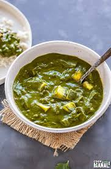

Palak Paneer
Calories: 350 kcal
Health Benefits: Rich in healthy fats, high in fiber, great source of protein and vitamins.

Ingredients:
- Ingredients:
For the Palak (Spinach) Puree:
Water (for blanching)
- 4 cups fresh spinach (palak), washed and chopped 1-2 green chilies (optional, for heat) 1-inch ginger piece 1 garlic clove (optional)
- For the Gravy: 2 tbsp oil or ghee 1 medium onion, finely chopped 1 medium tomato, pureed or chopped 1 tsp cumin seeds 1/2 tsp turmeric powder
- 1 tsp red chili powder 1 tsp garam masala 1/2 tsp cumin powder 1/2 tsp coriander powder
- Salt to taste 1/2 cup water (adjust for desired gravy consistency) 200g paneer, cut into cubes 1/4 cup cream (optional, for richness)
Instructions:
- For the Palak Puree: Bring a pot of water to a boil. Add the chopped spinach and blanch for 2-3 minutes. Drain and rinse with cold water to stop the cooking process.
- Transfer the blanched spinach to a blender. Add green chilies, ginger, and garlic. Blend into a smooth puree. Set aside.
- For the Gravy: Heat oil or ghee in a pan. Add cumin seeds and let them splutter.
- Add the finely chopped onion and sauté until golden brown.
- Stir in the tomato puree or chopped tomato. Cook until the oil separates.
- Add turmeric powder, red chili powder, garam masala, cumin powder, and coriander powder. Mix well.